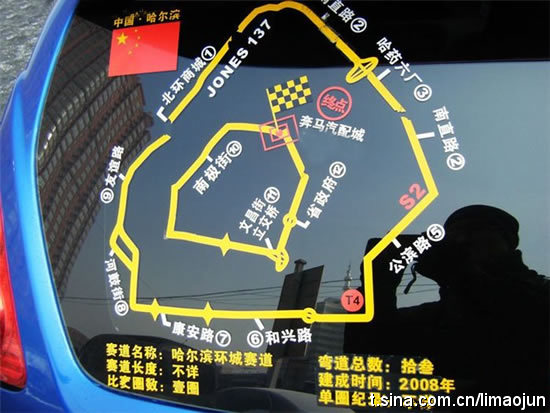

让现代都市人头疼的十件事：1、有工作，没生活 2、有爱人，没爱情 3、有微博，没粉丝 4、有住所，没住房 5、有存折，没存款 6、有名片，没名气 7、有加班，没加薪 8、有职业，没事业 9、有娱乐，没快乐 10、有朋友，没挚友。。

李多多
2011-03-10
李多多
2011-03-10
“交税应该用支付宝！！政绩出来了再确认支付！！！好评差评看个心情！！不给老百姓办事就TMD申请退款！！！！官员跟在屁股后面说：亲给好评呀亲！！！！亲，选我吧，包为人民服务的亲！！！！亲政绩做出了！！！请查收亲！！！”
李多多
2011-03-10
2011年哈尔滨环城赛道已公布！ 哈哈 有闲人可以测试下单圈最快哦！向达喀尔迈进！！
- 